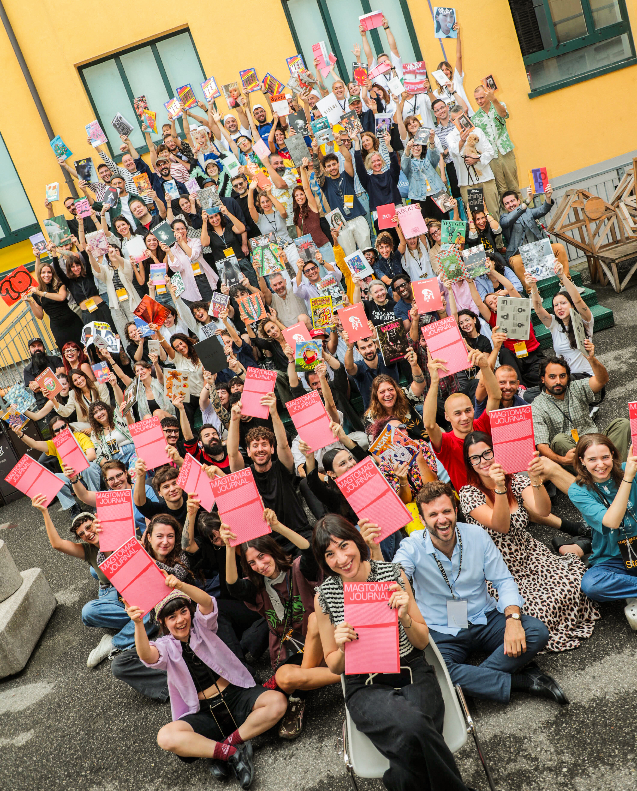

Tourist Information & Visitor Services Assistant
Welcome national and international visitors, offering guidance on local attractions, events, itineraries and accommodation. Manage ticket sales and the bookshop.

COMMUNICATION STUDENT • SAN BENEDETTO PO (MN), ITALY
Master’s student in Corporate Communication at the University of Milan — passionate about cultural projects, independent publishing, and editorial storytelling.
I’m a master’s student with a bachelor’s degree in Humanistic Sciences for Communication from the University of Florence.
During my third year, I studied at the University of Málaga through the Erasmus+ programme, where I fell in love with Andalusian culture. That experience helped me reach a C1 level in Spanish, and exploring the culture of the Spanish-speaking world remains one of my greatest passions.
Languages: Italian (native) · Spanish (C1) · English
Welcome national and international visitors, offering guidance on local attractions, events, itineraries and accommodation. Manage ticket sales and the bookshop.
Contributed to communication, marketing and promotion activities for cultural projects. Supported the organisation of Mag to Mag, the independent magazine festival, and published content on the blog. Coordinated the Frab’s pop-up shop at Fashion Graduate Italia, independently handling sales and visitor reception. Wrote an article for the website: “Uno squarcio nel sipario: il festival dagli occhi dei volontari”.
Wrote articles on current affairs and culture, focusing on youth, women’s rights and empowerment. Read my publications.
Coursework carried out entirely in Spanish, including:
61st Merit Award from Confindustria Mantova, given to students graduating with top marks in the 2021–2022 academic year. Commendation letter for academic merit (2021/2022) from the Liceo Classico e Linguistico Virgilio.

I’m really into indie magazines, which is why I follow the Mag to Mag festival every year, and why I volunteer there.
Web Communication project — HTML5 & CSS3 responsive redesign